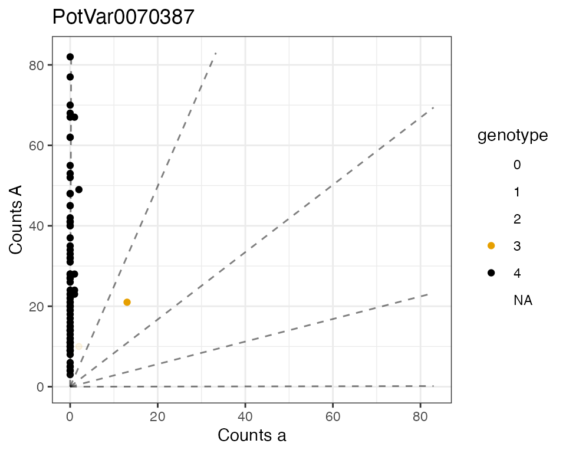
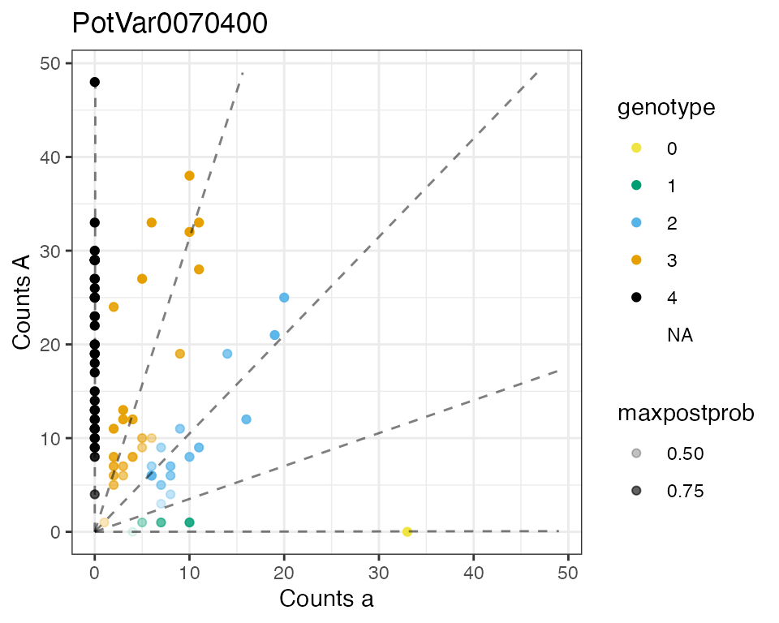
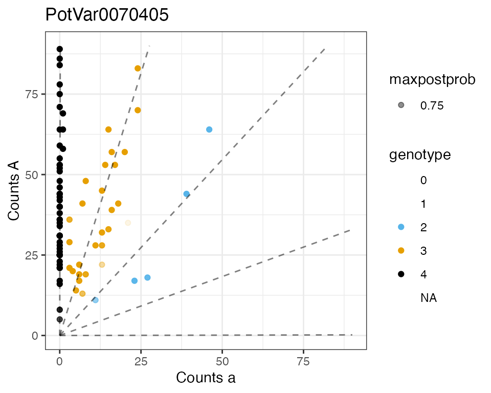
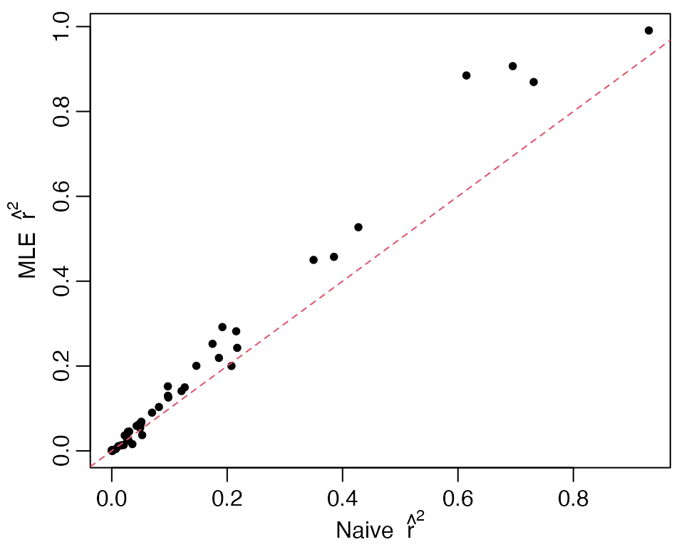

Summary
This vignette covers how to
- Load read-count data from a VCF file into R using
VariantAnnotation, - Format these data for genotyping using
updog, - Format the
updogoutput for LD estimation usingldsep, and - Estimate LD using
ldsepon the formatted output.
We will need the following packages:
If you do not have these packages installed, you can install them in R using:
install.packages(c("ldsep", "updog", "BiocManager"))
BiocManager::install("VariantAnnotation")The following code chunks are only evaluated if all of these packages
are installed. In particular, you need to make sure that your version of
updog is at least 2.0.2.
packageVersion("updog")
#> [1] '2.1.5'Analysis
Extract data from a VCF file using
VariantAnnotation
The ldsep package comes with a VCF file containing a
small (arbitrarily chosen) subset of the data from Uitdewilligen et.
al. (2013). These data consist of a diversity panel of autotetraploid
Solanum tuberosum (2n = 4x = 48). The location of this file on
your computer can be found with:
uit_file <- system.file("extdata", "subuit.vcf",
package = "ldsep",
mustWork = TRUE)We will use the excellent VariantAnnotation package
(Obenchain et. al., 2014) to load these data into R. You can read more
about VariantAnnotation in its vignette: https://doi.org/doi:10.18129/B9.bioc.VariantAnnotation
subuit <- readVcf(file = uit_file)
class(subuit)
#> [1] "CollapsedVCF"
#> attr(,"package")
#> [1] "VariantAnnotation"A brief description of the genotype fields can be seen with
geno(header(subuit))
#> DataFrame with 8 rows and 3 columns
#> Number Type Description
#> <character> <character> <character>
#> GT 1 String Genotype
#> GQ 1 Integer Genotype Quality, th..
#> GL G Float Genotype Likelihood,..
#> DP 1 Integer Read Depth
#> RA 1 Integer Reference allele obs..
#> AA 1 Integer Alternate allele obs..
#> SR 1 Integer Number of reference ..
#> SA 1 Integer Number of alternate ..See the Samtools website for a more detailed description of the format and the genotype fields in a VCF file: http://samtools.github.io/hts-specs/
To format these data for genotyping in updog, we need
the total read-depth, which in this VCF file is the DP
field, and we need the read-depth for the reference allele, which in
this VCF file is the RA field. You should read the VCF documentation (and
the documentation of the software that created the VCF) very carefully,
because you might need to work with other genotype fields to obtain
read-counts. For example, in many VCF files you need to work with the
AD field that contains the read-depth for each allele.
These are matrices where the rows index the loci and the columns
index the individuals. That is, sizemat[i, j] is the total
read-count at SNP i for individual j, while
refmat[i, j] is the reference read-count at SNP
i for individual j.
Genotype individuals using updog
To genotype these individuals, we will use the
multidog() function from the updog R package
(Gerard et. al., 2018; Gerard and Ferrão, 2020). We could use other
genotyping programs, as long as they return genotype
log-likelihoods.
We will use model = "norm".
ploidy <- 4
mout <- multidog(refmat = refmat,
sizemat = sizemat,
ploidy = ploidy,
model = "norm")
#> | *.#,%
#> ||| *******/
#> ||||||| (**..#**. */ **/
#> ||||||||| */****************************/*%
#> ||| &****..,*.************************/
#> ||| (....,,,*,...****%********/(******
#> ||| ,,****%////,,,,./.****/
#> ||| /**// .*///....
#> ||| .*/*/%# .,/ .,
#> ||| , **/ #% .* ..
#> ||| ,,,*
#>
#> Working on it...done!We can plot some of the SNPs in a genotype plot (Gerard et. al., 2018) to evaluate the accuracy of the genotyping:

We probably want to filter out SNPs that are mostly monoallelic. We
can do that with filter_snp().
msub <- filter_snp(x = mout, pmax(Pr_0, Pr_1, Pr_2, Pr_3, Pr_4) < 0.95)
nrow(msub$snpdf)
#> [1] 10We can obtain the genotype log-likelihoods, in the appropriate format
used in ldesp, with format_multidog().
varnames <- paste0("logL_", 0:ploidy)
varnames
#> [1] "logL_0" "logL_1" "logL_2" "logL_3" "logL_4"
larray <- format_multidog(x = msub, varname = varnames)
class(larray)
#> [1] "array"
dim(larray)
#> [1] 10 84 5This is a three-way array of genotype log-likelihoods. The
first dimension indexes the SNPs, the second dimension indexes the
individuals, and the third dimension indexes the genotypes. That is,
larray[i, j, k] is the genotype log-likelihood at SNP
i for individual j and dosage
k - 1.
It is possible to also just use the posterior means for LD estimation
(doing so will result in speed gains but a loss of accuracy). You can
extract the posterior means also using
format_multidog().
pmmat <- format_multidog(x = msub, varname = "postmean")
class(pmmat)
#> [1] "matrix" "array"
dim(pmmat)
#> [1] 10 84This is a matrix of posterior mean genotypes. That is,
pmmat[i, j] is the posterior mean genotype at SNP
i for individual j.
Extracting Log-likelihoods using fitPoly
We will also demonstrate how to use the genotyping program,
fitPoly (Voorrips et. al., 2011; Zych et. al., 2019), to
obtain genotype log-likelihoods. None of these code chunks are run by
default because I did not want to include more dependencies that are
just used in the vignette. You can run these code chunks manually. Makes
sure you have the fitPoly and reshape2
packages installed:
We will first need to format the VCF data appropriately for use in
fitPoly.
ratiodf <- melt(data = refmat / sizemat,
varnames = c("MarkerName", "SampleName"),
value.name = "ratio")
saveMarkerModels(ploidy = ploidy,
data = ratiodf,
filePrefix = "uit",
rdaFiles = TRUE)This has created two files in your working directory:
- uit_scores.RData: This contains information for each sample. This
“RData” file contains a data frame called
scores. - uit_models.RData: This contains information for each SNP. This
“RData” file contains a data frame called
modeldata.
We’ll load these data frames into R now.
We will again filter out SNPs that are monoallelic:
modeldata <- subset(x = modeldata, subset = pmax(P0, P1, P2, P3, P4) < 0.95)
scores <- scores[scores$MarkerName %in% modeldata$MarkerName, ]fitPoly only provides posterior genotype probabilities
(in the scores data frame), not genotype likelihoods. But
we can divide these posterior probabilities by the provided prior
probabilities (in the modeldata data frame) and use these
as genotype likelihoods. They aren’t quite genotype likelihoods, but
they are up to a proportional constant that does not depend on any
parameters, and so would result in the same MLEs as using the real
genotype likelihoods. This does create a little bit more work for us,
formatting-wise, however.
mergedf <- merge(x = scores[c("MarkerName", "SampleName", paste0("P", 0:ploidy))],
y = modeldata[c("MarkerName", paste0("P", 0:ploidy))],
by = "MarkerName",
all.x = TRUE)
for (i in 0:ploidy) {
current_post <- paste0("P", i, ".x")
current_prior <- paste0("P", i, ".y")
current_ll <- paste0("logL_", i)
mergedf[[current_ll]] <- log(mergedf[[current_post]]) - log(mergedf[[current_prior]])
}
fp_llarray <- acast(
melt(data = mergedf[c("MarkerName", "SampleName", paste0("logL_", 0:ploidy))],
id.vars = c("MarkerName", "SampleName"),
variable.name = "dosage",
value.name = "logl"),
formula = "MarkerName ~ SampleName ~ dosage",
value.var = "logl",
)We can now, if we choose, use fp_llarray instead of
larray in what follows. That is,
fp_llarray[i, j, k] is the genotype log-likelihood at SNP
i for individual j and dosage
k - 1.
Note that for sequencing data, updog will generally
perform better than fitPoly, as fitPoly was
designed for microarray data. But for microarray data,
fitPoly works really well.
Estimate LD using ldsep
We will now demonstrate how to estimate LD using the
ldsep package (Gerard, 2021). To estimate LD using maximum
likelihood, directly from genotype log-likelihoods, we will use
mldest() with the array of genotype log-likelihoods.
like_ld <- mldest(geno = larray, K = ploidy, type = "comp")We can visualize the LD estimates using plot()
plot(like_ld)The naive LD estimates (using just sample moments) with the posterior
mean can also be found using mldest():
mom_ld <- mldest(geno = pmmat, K = ploidy, type = "comp")The larger naive LD estimates are noticeably attenuated toward zero (due to the influence of genotype uncertainty).
plot(mom_ld)It is easier to see this attenuation in a scatterplot. The red, dashed line is the y=x line and any points above this line are pairs of SNPs where the LD was estimated to be larger by the MLE method compared to the naive method. The larger LD values are much more attenuated using the naive approach.
par(mar = c(2.4, 2.8, 0, 0) + 0.5, mgp = c(1.8, 0.6, 0))
plot(mom_ld$r2, like_ld$r2,
xlab = expression(paste(textstyle(Naive), ~~hat(r)^2)),
ylab = expression(paste(textstyle(MLE), ~~hat(r)^2)),
pch = 20)
abline(0, 1, lty = 2, col = 2)
Finally, these LD estimates may be obtained in matrix form using
format_lddf().
ldmat <- format_lddf(obj = like_ld, element = "r2")
ldmat[1:4, 1:4]
#> PotVar0070390 PotVar0070392 PotVar0070393 PotVar0070394
#> PotVar0070390 NA 0.01382096 0.01314104 0.52714816
#> PotVar0070392 NA NA 0.45734767 0.03634504
#> PotVar0070393 NA NA NA 0.05895799
#> PotVar0070394 NA NA NA NAReferences
Gerard, David (2021). “Pairwise Linkage Disequilibrium Estimation for Polyploids.” Molecular Ecology Resources, 21(4), 1230–1242. doi:10.1111/1755-0998.13349.
Gerard D, Ferrão L (2020). “Priors for Genotyping Polyploids.” Bioinformatics, 36(6), 1795-1800. ISSN 1367-4803, doi:10.1093/bioinformatics/btz852.
Gerard D, Ferrão L, Garcia A, Stephens M (2018). “Genotyping Polyploids from Messy Sequencing Data.” Genetics, 210(3), 789-807. ISSN 0016-6731, doi:10.1534/genetics.118.301468.
Obenchain V, Lawrence M, Carey V, Gogarten S, Shannon P, Morgan M (2014). “VariantAnnotation: a Bioconductor package for exploration and annotation of genetic variants.” Bioinformatics, 30(14), 2076-2078. doi:10.1093/bioinformatics/btu168.
Uitdewilligen JGAML, Wolters AA, D’hoop BB, Borm TJA, Visser RGF, and van Eck HJ (2013). “A next-generation sequencing method for genotyping-by-sequencing of highly heterozygous autotetraploid potato.” PloS one 8(5), e62355. doi:10.1371/journal.pone.0062355
Voorrips RE, Gort G, and Vosman B (2011). “Genotype calling in tetraploid species from bi-allelic marker data using mixture models.” BMC Bioinformatics, 12(1), 172. doi:10.1186/1471-2105-12-172.
Zych K, Gort G, Maliepaard CA, Jansen RC, and Voorrips RE (2019). “FitTetra 2.0–improved genotype calling for tetraploids with multiple population and parental data support.” BMC bioinformatics, 20(1), 148. doi:10.1186/s12859-019-2703-y.